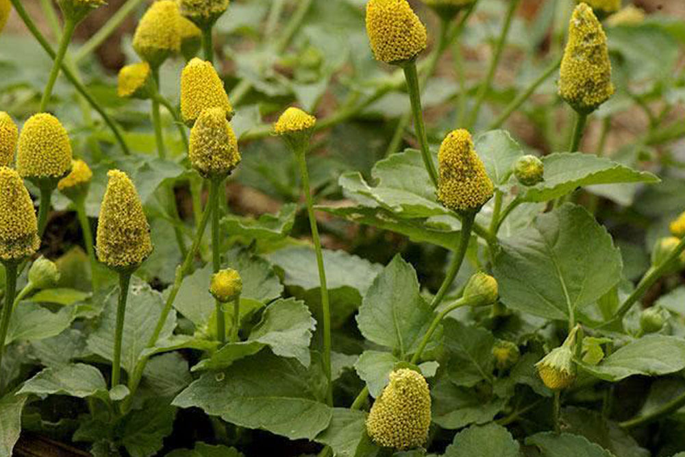
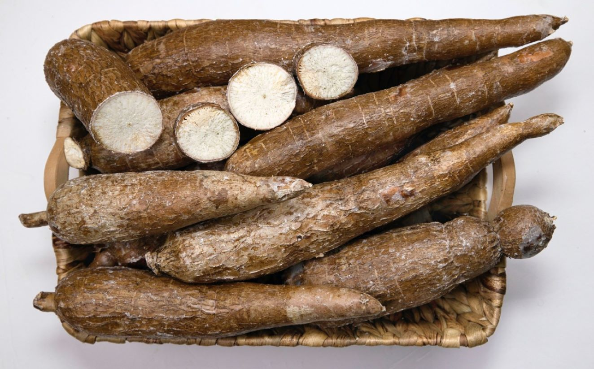
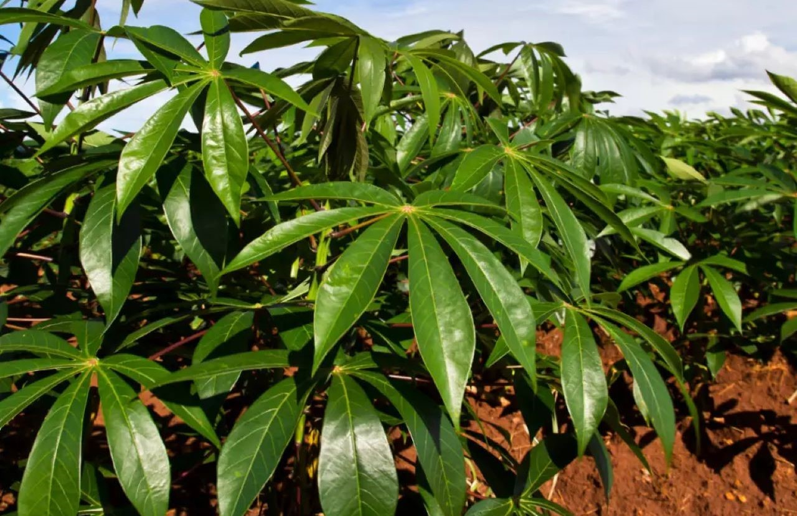
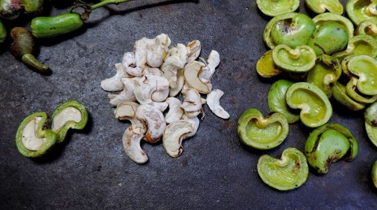
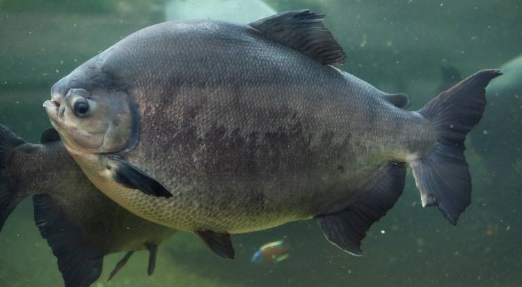
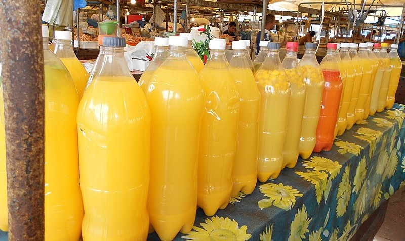

O açaí se espalhou por todo o brasil, porém, é na região norte onde pode se ver toda sua versatilidade, sendo usado tanto em pratos doces quanto salgados.

Jambu
A famosa Jambu, erva que deixa a língua dormente, é um ingrediente usado pelos índios e hoje aromatiza até cachaças.

Macaxeira
A mandioca, também conhecida como macaxeira, é um dos principais ingredientes da culinária amazônica, presente em diversos pratos típicos da região

Maniva
A maniva é a folha moída da mandioca, que na culinária paraense é um dos ingredientes principais de um dos pratos mais apreciados na região, a maniçoba.

Maturi
O maturi nada mais é que a castanha de caju ainda em formação, é utilizado na região do baixo amazonas e até nordeste do brasil em pratos típicos como a moqueca.
Pirarucu
O pirarucu é um peixe de rio conhecido como o "O gigante amazônico", pode ser usado fresco ou seco e salgado e é utilizado em pratos como o pirarucu, de mesmo nome, e a moqueca.

Tambaqui
O tambaqui é um peixe carnudo que é muito apreciado pelo sabor marcante da sua carne, que tem bastante gordura e poucas espinhas.

Tucupi
O Tucupi é o liquido amarelado extraído da raiz da mandioca, é um ingrediente amado pelos paraenses e utilizado em uma variedade de pratos regionais.